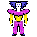
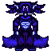
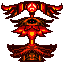

Minrrer El Bufón Estelar

Minrrer
Minrrer no es un dios ancestral nacido del vacío, sino una entidad creada por el propio choque entre el Orden y el Caos. Representa la ironía del azar. Su cuerpo esbelto de cuello largo y hombreras infladas emula a los bufones clásicos de las cortes medievales, aquellos que tenían permitido burlarse tanto del rey como del mendigo. En el universo de Card's o Caos, Minrrer es el intermediario irreverente. Cuando Morrigan intenta imponer una regla matemática estricta y Tarkmatan la deforma con violencia, Minrrer se interpone para imitar y ridiculizar a ambos. Él es el reflejo de la frustración del jugador: la carta que no beneficia a nadie, que copia el efecto de otra de forma aleatoria o que obliga a los contrincantes a jugar con las cartas al revés. No busca la victoria cósmica de Morrigan ni la aniquilación de Tarkmatan; Minrrer solo quiere ver qué pasa cuando obligas a las fuerzas del universo a mirarse en un espejo distorsionado.

Minrrer Del Guión
Lo más impactante de su metamorfosis es su cuerpo, ahora imponente y acorazado. En su pecho brilla con fuerza un glifo rúnico de luz cian, una cerradura mística que almacena las leyes inquebrantables de Morrigan. Sus pantalones bombachos se han transformado en una falda acampanada y pesada que se arrastra por el suelo, dividida en tres secciones perfectas que emulan un trono móvil. En este estado, Minrrer del Guion actúa como el ejecutor implacable del destino en Card's o Caos. Ya no copia habilidades por diversión ni genera jugadas absurdas. Su único propósito en la mesa es congelar el juego: anula cualquier intento de activar el azar, confisca las cartas "caóticas" de la mano de los jugadores y los obliga a jugar en un orden milimétrico predeterminado. Es el bufón que dejó de improvisar para convertirse en la prisión geométrica del tablero.

Minrrer Cascabel De Ceniza
La cabeza de Minrrer ha sido completamente colonizada por la heráldica violenta de Tarkmatan. Su máscara ya no es humana ni burlona: ahora es un óvalo carmesí incandescente atrapado en un marco de picos oscuros. En su centro, los rasgos del payaso se han derretido para formar un glifo trágico: una boca abierta en un grito eterno de dolor, o una mueca invertida que parpadea como lava viva.Sobre su cabeza, las extensiones que antes parecían un sombrero de bufón o un peinado se han estirado hacia los lados como alas de fénix calcinadas o cuernos heráldicos gigantescos, pesados y cubiertos de fuego sólido. Ya no hay ligereza; hay una presión cósmica que aplasta su cuello estirado.
"JAJAJAJAJAJAJAJAJAJJAJA" —Fragmento del diario de lo desconocido Tomo I: Min.